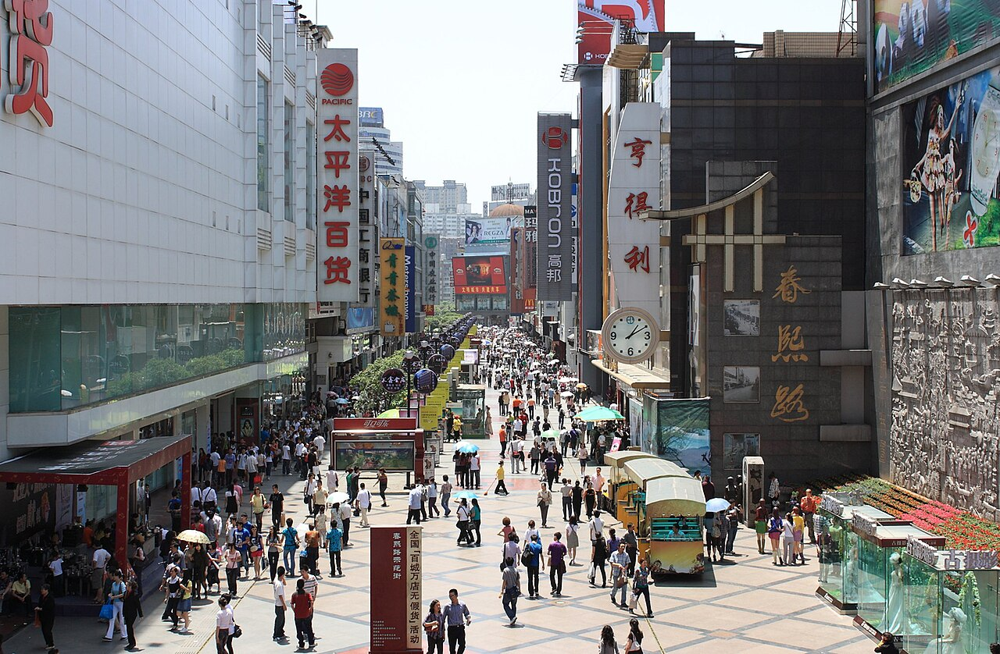
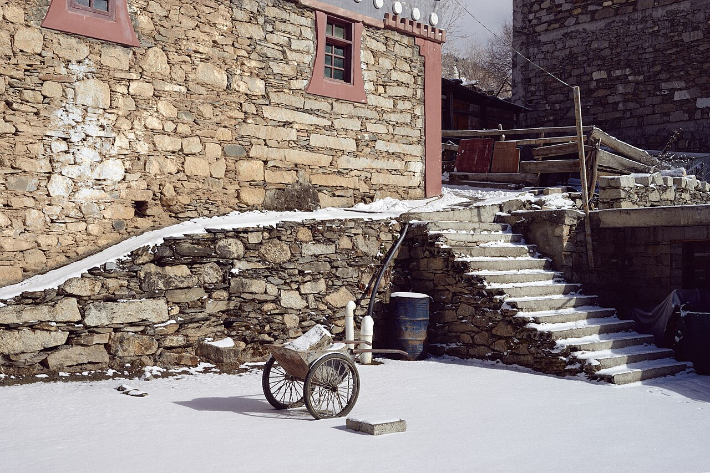

11/02（一）抵達成都
台中 RMQ → 香港 HKG → 成都雙流 CTU
- 台中起飛 UO173，15:00 抵香港 T1
- 香港起飛 CX916，轉機約 4 小時，可在機場吃晚餐
- 抵達成都雙流 T1 → 前往飯店入住

台中 RMQ → 香港 HKG → 成都雙流 CTU

辦手機門號、銀行卡 ・ 玉林街 ・ 春熙路＋太古里

高鐵＋商務車接駁進九寨溝
門票已訂（小程序：九寨溝旅遊訂票）

回成都 ・ 金色印象按摩 ・ 休息

茶店子客運站搭直達旅遊車

門票已訂（小程序：阿壩旅遊訂票）

寬窄巷子 ・ 奎星樓街 ・ 武侯祠 ・ 錦里 ・ 蜀賦宴

補逛、採買伴手禮 ・ 晚餐大院河・仙魚莊
成都雙流 CTU → 香港 HKG → 台中 RMQ
去程 11/02（一）
回程 11/11（三）
| 日期 | 區段 | 時間 | 狀態 |
|---|---|---|---|
| 11/04 | 高鐵 C5752 成都東 → 黃龍九寨 | 11:46 → 13:43 | 已訂 |
| 11/04 | 商務車接駁 黃龍九寨站 → 九寨溝 | 14:10 出發 約 2 小時 | 已訂 |
| 11/06 | 接駁 九寨溝 → 黃龍九寨站 | 約 2 小時 | 待訂 |
| 11/06 | 高鐵 C5754 黃龍九寨 → 成都東 | 14:14 → 16:37 | 已訂 |
高鐵票價參考：一等座約 ¥187–243、二等座約 ¥117–151／人（12306 APP）。景區直通車約 ¥51。
| 日期 | 區段 | 說明 | 狀態 |
|---|---|---|---|
| 11/07 | 成都茶店子客運站 → 四姑娘山鎮 | 直達旅遊車 約 4–6 小時、約 ¥120 | 待訂 |
| 11/08 | 四姑娘山鎮 → 雙橋溝 | 需另外找接駁 | 現場找 |
| 11/08 | 四姑娘山 → 成都 | 約 16:00–18:00 | 待訂 |
D1–D2 ・ 11/02–11/04 ・ 2 晚
豪華大床房・65 m²・無早餐
廚房・大冰箱・洗衣機＋烘衣機・微波爐・100 吋投影・藍牙音響・智能馬桶
✅ 已付款 NT$2,816 ・ 11/02 12:00 前可免費取消
D3–D4 ・ 11/04–11/06 ・ 2 晚
雅緻雙床房・26 m²・含早餐
九寨溝 火地壩風景區旅遊客運中心（623400）
✅ 已付款 NT$3,542 ・ 不可取消
D5 ・ 11/06–11/07 ・ 1 晚
歡歡特大床套房・68 m²・無早餐
成都 錦江區 東御街 88 號 星滙廣場 4 單元 1 樓
廚房・大冰箱・洗烘一體機・微波爐・巨幕投影・頂噴花灑
💳 預計 11/04 扣款 NT$1,205 ・ 11/06 18:00 前可免費取消
D6 ・ 11/07–11/08 ・ 1 晚
拂曉暖舍｜觀景投影大床房・38 m²・無早餐
小金縣 四姑娘山鎮 金鋒村 1 組 13 號
👉 從「山友之家」旁邊的路口進去
智能馬桶・乳膠床墊・觀景投影
💳 預計 11/05 扣款 NT$1,385 ・ 11/07 18:00 前可免費取消
D7–D9 ・ 11/08–11/11 ・ 3 晚
翡冷翠一室一廳套房・70 m²・無早餐
成都 錦江區 下東大街 99 號 晶融匯公寓
廚房・大冰箱・洗衣機＋烘衣機・微波爐・100 吋投影・乳膠床墊
💳 預計 11/06 扣款 NT$4,741 ・ 11/08 12:00 前可免費取消

開放式購物街區、精品品牌、咖啡廳、潮流店。

傳統院落、青磚巷弄、茶館、文創店。商業化重，建議只拍照，把胃留給下一站。
紅燈籠、仿古街道、民俗表演和小吃，晚上散步拍照最美，可搭配武侯祠。

三國蜀漢文化聖地，就在錦里旁邊。
餐館、小吃、串串香、川菜與年輕人喜歡的小店，適合專程來吃飯。
社區街道、小酒館、咖啡店、串串香，生活感十足；玉林路以音樂和小酒館文化聞名。


必看！尚未排進行程，可放在 D8 或 D9 晚上。
考慮：黃龍（時間多再說）
備用：人民公園、都江堰、樂山大佛、文殊院
勾選會記在這支手機的瀏覽器裡。